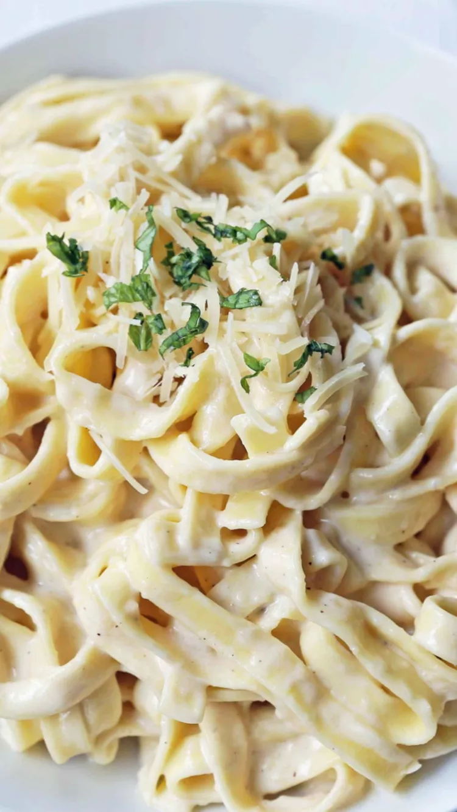

Fettuccine Alfredo

Description
This recipe is known as "To Die For Fettuccine Alfredo" and as I can attest, it lives up to the name. This recipe is a rendition of the user ERINMARIE's mother's recipe from allrecipes.com
Ingredients
- 24 ounces dry fettucine pasta
- 1 cup butter
- 3/4 pint heavy cream
- salt and pepper
- 1 dash garlic salt
- 3/4 cup grated Romano cheese
- 1/2 cup grated Parmesan cheese
Steps
- Bring a large pot of lightly salted water to a boil
- Add fettuccine and cook for 8 minutes to 10 minutes or until al dente; drain
- Melt butter into cream in a large saucpan over low heat
- Add salt, pepper, and garlic salt to melted butter
- Stir in grated Romano and Parmesan cheese until melted an dsauce has thickened
- Add cooked pasta to sauce and toss until thoroughly coated
- Enjoy!